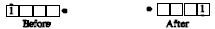
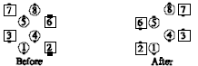

From anywhere a Run is possible, or from a single dancer: The designated dancer does a Run around the adjacent vacant spot or dancer, who does not move! The caller must designate a looping direction (right, left, in, out), and must say how many people or spots to pass. For example: in Right Loop 3 the looper moves to the right, passing 3 positions.

It is possible for a dancer to Loop around phantom positions as though there were dancers in them. No special words are needed. For example: Men, In Loop 2:

© Copyright 1983, 1986-1988, 1995-2011 Bill Davis, John Sybalsky and CALLERLAB Inc., The International Association of Square Dance Callers. Permission to reprint, republish, and create derivative works without royalty is hereby granted, provided this notice appears. Publication on the Internet of derivative works without royalty is hereby granted provided this notice appears. Permission to quote parts or all of this document without royalty is hereby granted, provided this notice is included. Information contained herein shall not be changed nor revised in any derivation or publication.